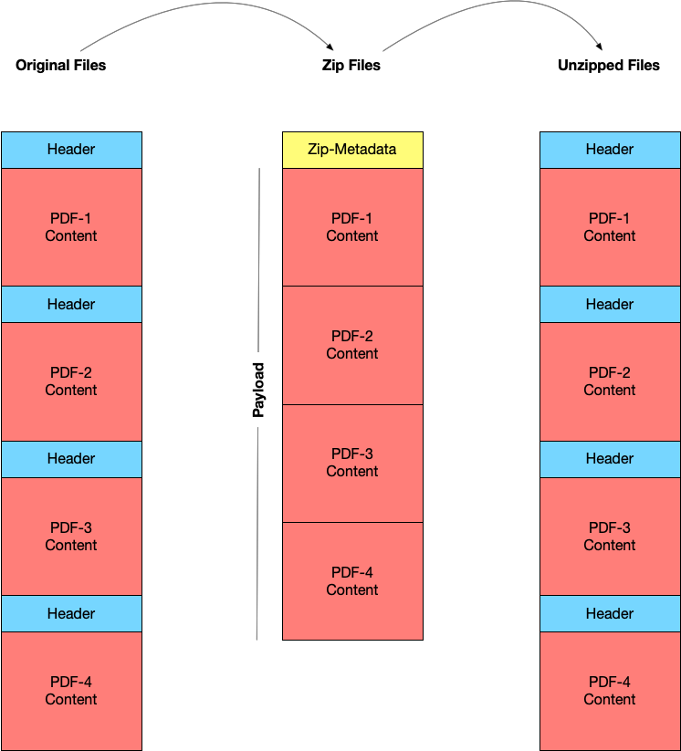
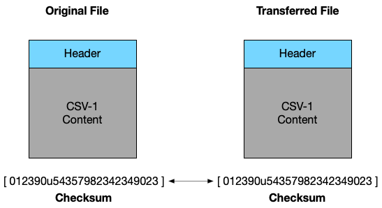
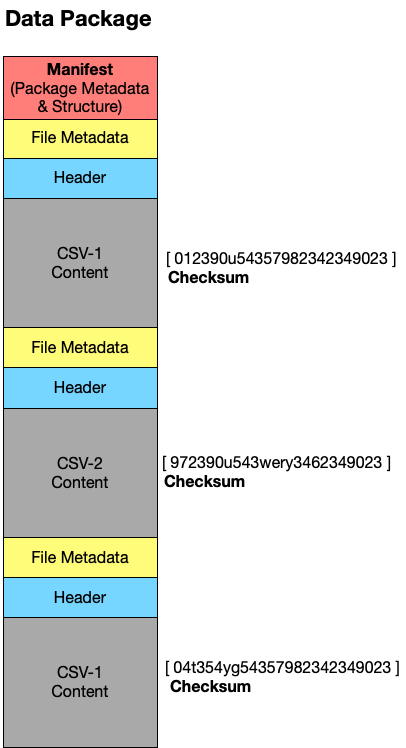
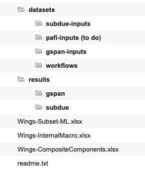

Chapter 6 Data Packaging
As data grow in size, and the documentation, software, and dependencies of an operating system grow in complexity - it is becoming increasingly hard to access and transfer data without a conceptual “package” to do so.
In this week we’re going to think about how both the metaphor and the practical application of “packaging” impacts data curation work. A warning in advance, this is a bit of a “boring” topic but it is an important one to understand for future, practical, curation work.
My hope is that this chapter will help us begin to see how and why our work in developing metadata for data curation is paramount to sustainable access, and introduce a few broadly used standards for creating data packages. The readings this week reflect the emergence and complexity of this topic.
Let’s give it our best effort - choose one of the standards I’ve listed to do some reading of technical documentation. You do not have to read these standards or docs linearly - feel free to skim and get the gist of just one.
6.1 Chapter
Data in the context of this book are defined as “information objects playing the role of evidence”. Thus far, we’ve discussed ways to structure, tidy, and integrate data for long-term archiving and reuse. In doing so, we’ve focused on trying to ensure that data, as “evidence”, remains interpretable and valuable to various end-users. In the next three chapters we will turn our attention to ways that data are packaged, described, and discovered by end-users. These are topics that impact how information objects are exchanged, and the ways that data (as evidence) is reliably evaluated for reuse. These three topics are, as discussed last week, a grand challenge for data curation.
6.1.1 The Concept of Packaging Data
A data package is a container that includes, at minimum, a data object and its metadata (e.g. descriptive properties of the data, such as date of creation, size, format, etc.). At face value, a data package may similar in concept to a folder that sits on our desktop computers - these are also “containers” that can include data and metadata. The key difference is that a data package is an independent format, and is self-describing. The format independence and self-describing features or the data package enable a set of data to be meaningfully exchanged across computing environments.
- Independent Format: The package exists as a standalone formatted file that is not a directory, but instead contains a directory of files. The files are encoded by the package’s format.
- Self-describing: The package contains metadata that describes both the contents, and the format of the package. There are two components to this self-description: The metadata, that describes each item, and the manifest, that describes the structure of the package’s content.
Data packaging is useful for accomplishing a number of mundane tasks in data curation, such as the transfer of data (from one researcher to another, the exporting and importing of data from one repository to another) or the long-term storage of data.
Packaging, more generally, is something that most users of a computer do without ever thinking about it. For example, every time we create a zip file we are using a data packaging standard. Before we turn to specifications and details of packages used in data curation, let’s unpack1 the concept of a zip file to better understand the role of packaging in contemporary computing environments.
6.1.2 The Zip Package
Most of us have used a “zip file” as a simple way to reduce the size of files that we want to send over the internet. A zip file is a bit of a misnomer - a zip is not just a file, but a complex set of technologies that work together to create a package of data.
A zip file implements what is called a “compression algorithm” - this algorithm first characterizes the bit sequences in a collection of files (in our class, we’ve referred to this as the “physical layer” of data). The algorithm then removes any unnecessary or redundant bits across the collection of files. What is left, in the language of data engineering, is called a “payload” - that is, only the unique content that we want to transfer via the package.
A Zip tool, which implements the algorithm, will also create metadata that will describe each file, and the manifest or metadata about what content the “zip” package contains as a whole.
When a zip file is opened on a new computer, in the background what our operating systems is reading are the following:
- The metadata about the collection of files. This includes some information about what type of files are contained in the Zip.
- The payload - which is just the unique content of the files that have been algorithmically compressed.
Our operating systems then reassemble the original files by re-injecting the missing or redundant bits back into each file.
An example of a zip file may help make this clear: If we want to compress a folder of PDF documents, then we don’t need to actually transfer all of the bits for each PDF - we only need the unique content (the bits) that make up each individual PDF. Because, PDF is a standard and each PDF has the same “header” (bits of information that tell our computers how to interpret a PDF) we don’t need to actually transfer any header information. By removing redundant information (the header) we significantly reduce the size of the files being transferred. When a zip file is re-opened, on another computer, the operating system scans the metadata about each file, and based on the standard (in this case a PDF) our operating system will re-inject the header information to make the PDF files readable.

A zip file then acts as a data package with a very specific purpose - to reduce the size of files, and then package them together in a self-describing, independent container.
6.1.3 Data Packages for Curation
Data packages in curation are meant to bundle together a set of files, describe their contents, and then provide a simple container for transferring these files to a new environment. Compressing the size of our data is not as important a feature in curation as it is in general computing. This is for the simple reason that the size of our data is not as important as making sure that the objects we are transferring remain “authentic” - that is they have not changed or been altered in the course of being exchanged from one environment to another.
In Data Curation 1 - we described ways to ensure that our data have ‘authenticity’ - that is a digital object is what it purports to be. We discussed how, for example, a curator can characterize a file by creating a “check-sum” which is essentially a number that is generated to describe the header and content information of any digital object.
The check-sum is one of the most important features of a data package - it allows for a curator to create a simple string of numbers that characterize a digital object’s bits - and then upon re-opening the digital object in a new computing environment - check that the number matches.2 We can think of a check-sum as our failsafe for ensuring that digital objects, data, continue to be authentic when packaged and exchanged across different computers.

To quickly review, thus far we have said that a data package in curations consists simply of:
- Metadata that describes the structure (the manifest) and the contents of the package
- Resources such as data files that form the contents of the package
- Checksums that characterize the contents of a package (these are often included as metadata, but can occasionally be separated out as their own plain text file)
The metadata about the package itself, the manifest, often contains the following:
- General metadata such as the package’s title, license, publisher etc
- A list of the data “resources” that make up the package including their location on disk or online and other relevant information (including, possibly, schema information about these data resources in a structured form)
Here is, conceptually, what a data package might contain:

In the following section I will offer some in-depth description of two packaging standards that are used often in data curation: BagIT and Research Objects.
6.1.4 BagIT
BagIT comes from a phrase used in the early days of data engineering “Bag it and tag it” - meaning that data were supposed to be formatted, and described with standard metadata tags. BagIT grew out of a need for conducting digital preservation when operating systems like Windows, Mac, and Linux were much less compatible than they are today. Early digital curators needed a general standard where data could be uniformly described, structured within a self-describing container, and transferred across different operating systems (and their different file directories) reliably3
The BagIT standard outlines file naming conventions, so that each file in a package is easily interpretable; it provides a recommendation for how to create a manifest, so that all the files included in a package are accurately described; and, it provides a way to include checksums for each file that is contained in the “bag”.
These simple features allow the senders and receivers of a package to easily identify and understand the contents of a data package. Practically, a bag looks like a standard file directory structure. Here is the structure of a simple bag - My1stBag
bag-info.txt
bagit.txt
data/
file1.csv
file2.csv
metadata/
file1-metadata.json
file2-metadata.json
fetch.tex
manifest-md5.txtLet’s look at each of these files to understand exactly what the package My1stBag contains:
bag-info.txt: This is the manifest metadata about the bag, such as the bag’s name, who created it, and on what date. Importantly, the manifest will offer a description of exactly what kinds of files are contained in the bag (see example below).bagit.txt: This is the version of the BagIT standard that we are using, and any information about how the bag might be formatted (or encoded).data\: This is the content of our bag - which is going to consist of a set of filesfile1andfile2: these are the actual contents of our bag, the data files that are being packaged and described.metadata\: This is a directory within our data, that will contain metadata about each content file.file1-metadtaandfile2metadata: These are the metadata files that provide descriptive metadata about each data file.fetch.txt: The BagIT standard, as I described above, was designed for digital preservation. The fetch.txt file allows an operating system to check if there are any missing contents (this is beyond the scope of the explanation for this chapter - but just keep in mind that this is a file that all bags usually contain, even if you never pay attention to it (I don’t))
manifest-md5.txt: This is the check-sum that we create for the bag of files. In this bag, we have two data files,file1.csvandfile2.csv. Themanifest-md5.txtcontains a checksum for both of these files as well as their metadata. When a new operating system attempts to open the bag, it will first open each data file, and then create a checksum for each file. A curator will then compare the new checksum and the checksum that is listed in themanifest-md5.txtfile to make sure that these are the same. If they are the same (and they are 99.999% of the time) we can be sure that we’ve reliably transferred the data from one computing environment to another. Themd5in the filename of the manifest is a shorthand way to specify which checksum algorithm was used, in this case the algorithm ismd5- if you’re not already terribly bored by this chapter, you can read more about md5. I point this out only to explain that md5 is the most common algorithm used for creating check-sums in data curation.
The bag-info.txt file which contains manifest metadata can often be confusing for first time bag creators. Here is a an example of the bag-info.txt contents from a bag created by the University of North Texas library4
| Metadata Element | Value |
|---|---|
| Bag-Size | 28.32M |
| Bagging-Date | 2015-01-23 |
| CODA-Ingest-Batch-Identifier | f2dbfd7e-9dc5-43fd-975a-8a47e665e09f |
| CODA-Ingest-Timestamp | 2015-01-22T21 : 4333-0600 |
| Contact-Email | mark.phillips@unt.edu |
| Contact-Name | Mark Phillips |
| Contact-Phone | 940-369-7809 |
| External-Description | Collection of photographs held by the University of North; Texas Archives that were taken by Junebug Clark or other family members. Master files are tiff images. |
| External-Identifier | ark/67531/metadc488207 |
| Internal-Sender-Identifier | UNTA_AR0749-002-0016-0017 |
| Organization-Address | P. O. Box 305190, Denton, TX 76203-5190 |
| Payload-Oxum | 29666559.4 |
| Source-Organization | University of North Texas Libraries |
Practically, a bag is a bit more complicated to produce than a zip package - there are, helpfully, a number of tools for creating bags following the specifications that are described above. Many of these require using a command-line tool, such as the Bagger tool that is available from the Library of Congress. There is a very good set of tutorials outlining the practical steps in creating a bag from the State of North Carolina Archives if you are interested in exploring more.
6.1.5 Why Packages Matter
Above I reviewed a formal specification, BagIT, for creating a data package. But, taking a step back - this looks like an incredible amount of work to simply transfer data from one computer to another. We have already downloaded and used data from the web a number of times in this class - so why is a bag necessary if we routinely find, obtain, and use data without a package?
There are three main motivations for creating a data package that are worth explaining in more detail:
- Authenticity: In transferring data between institutions, especially if an institution like a repository or an archive are charged with long-term preservation, there is a need to ensure that the files have not been corrupted, and are what they purport to be. This helps a curator to ensure that what they receive (in a data package) can be reliably used over the long-term.
- Self-description: In class thus far, we’ve depended upon representations of metadata that appear on a dataset’s landing page. Here we can get a quick graphic user interface view of what the data are supposed to contain or be about. But, accessing the actual files, containing both data and metadata, has thus far required us to download multiple files and manage the relationship between those files on our own individual computers. By using a data package, we can efficiently transfer a container of data, metadata, and authenticity information that allows us to (similar to a Zip file) have everything we assume to be necessary to meaningfully engage with a collection of data in the same location.
- Complexity: I opened this chapter by describing an increasingly complex ecosystem of creating, managing, and sharing data - packages help to reduce this complexity by systematically describing data (and dependencies) that are necessary for meaningful transfer and eventually reuse.
BagIT is a standard that is broadly used by cultural heritage, archives, and libraries in packaging all kinds of digital objects. But, a number of other packaging standards have built upon BagIT’s core features to enhance and standardize things like file and manifest metadata. These standards are often in service of transferring a particular type of metadata, or a particular role that data play as evidence within a specific domain.

The last decade of innovation in data packaging has, as is typical, produced a confusing number of standards that we as curators might use. At their core, many of these new standards are, as I said above, simply modifying some small aspect of BagIT.
An emerging standard, and one that I think is going to ultimately be successful, comes from the concept of a Research Object. In the sections below, I’ll explain the conceptual foundation of a research object and the standard that is used to package research objects for efficient and effective reuse.
6.1.6 Research Object + BagIT
In contemporary research and data engineering data are created, used, and managed through a number of software and hardware specific environments.
For example, in our previous chapter on data integration we looked at a simple dataset, mtcars and a set of transformations in R using the package dplyr to restructure this data.
If we wanted to share our integration exercise with a colleague - we might just create a simple zip file and include the R code, the mtcars data, and some brief description of what we did to integrate one table with another (aka documentation).
But, let’s take the example of an ecology graduate student that has performed some analysis on a complex set of observations, using a specific set of software that she developed to analyze her data. If she wants to use this data as “evidence” that she has made some new discovery about the Adenomera frog in Brazil - then she needs a way to package and share this data with, for example, peer reviewers of a journal article. The package should, in theory, help the ecology graduate student PROVE that her claims are indeed evidence of some new discovery about the Adenomera.
Our ecology graduate student needs a package that can efficiently describe her data, and effectively transfer that data to a peer reviewer who can then verify that the data and software are authentic.
A Research Object (RO) is a conceptual way to describe a container of different digital objects - software, data, metadata, workflows, etc - that may need to be packaged together. The concept of an RO is rooted in the desire to improve the reproducibility of scientific claims by providing efficient access to ALL of the materials used to produce a research finding. Practically, a RO is a way to describe the “content” aspect of any data package. It provides a metadata standard that can be used to structure and describe each data file in relation to software or other documentation needed to interpret that file. RO does not, however, provide a way for creating standardized manifest metadata. Instead - it depends on the BagIT standard to implement a file structure, and manifest metadata (the bag-info.txt file) for the purposes of creating a transferrable package.
Here is a description of a Research Object from Daniel Garijo Verdejo: RO For the thesis “Mining Abstractions in Scientific Workflows”
Note that Daniel is describing, in plain language, what his Research Object contains, how it is structured, and where different components of the RO can be found on the web.
In a formalized metadata record (encoded as JSON) Daniel also provides a description of his data, software, and workflows following a set of standards described by RO. He also provides a package of this data, metadata, and workflows available here
In this RO we see a number of different datasets and results files - along with a plain text readme.txt file which contains some additional information about his thesis.

As savvy data curators you probably recognize that this RO doesn’t include any checksum information. That is, there is no way, even with the shared data and metadata descriptions following ROs recommendations, to verify that these data are what they purport to be, right?
This is where RO can rely on the BagIT standard to further package the RO for reliable transfer and meaningful reuse. By bagging this RO, we will create a bag-info.txt file that describes all of the contents, and then create checksums for each data file. We store the checksums in a manifest-md5.txt file that anyone who is sent, or downloads Daniel’s data can be sure that it is exactly what it purports to be.
Take a minute to consider the curation work that we’ve just laid out: We have a very thorough researcher who has carefully prepared their data for reuse. To help ensure the long-term viability of this research object, we created a bag and we put Daniel’s data into the bag (the structure of BagIT) so that anyone who, in the future, wants to reuse Daniel’s thesis can be sure that the data, software, and workflows are exactly what he used to produce novel findings.
In many ways, packaging is a curatorial intervention that not just makes data easy to transfer, but provides a safeguard for ensuring reliably reuse. We practically accomplish this curation task by simply using the BagIT standard’s structure, and creating a set of checksums to ensure authenticity.
6.2 Lecture
6.3 Readings
- Bechhofer, S., De Roure, D., Gamble, M., Goble, C., & Buchan, I. (2010). Research objects: Towards exchange and reuse of digital knowledge. https://eprints.soton.ac.uk/268555/1/fwcs-ros-submitted-2010-02-15.pdf
Approaches to Research Data Packaging:
Read notes from this RDA meeting in 2018 which thoroughly reviews the concept of data packaging.
Neylon (2017) Packaging data http://cameronneylon.net/blog/packaging-data-the-core-problem-in-general-data-sharing/ (Note this is the motivation for what was created as the Data Crate (see below) standard).
Pick One of following to read or review in-depth:
- BagIT for packaging QDR Data (social science / qualitative data) https://github.com/QualitativeDataRepository/dataverse/wiki/Data-and-Metadata-Packaging-for-Archiving (and some background reading on BagIT if you are really interested https://tools.ietf.org/pdf/draft-kunze-bagit-14.pdf )
- Frictionless data (general and open data) https://frictionlessdata.io/data-package
- Data Crate (general research data) http://ptsefton.com/2019/07/01/DataCrate-OR2019.htm
- Data Package (Ecology): https://releases.dataone.org/online/api-documentation-v2.0.1/design/DataPackage.html
- HTRC Data Capsules (Digital Humanities) https://wiki.htrc.illinois.edu/display/COM/HTRC+Data+Capsule+Specifications+and+Usage+Guide
6.4 Exercise
This week there is no assignment to turn in. Instead we are going to look at a tool Data Curator that allows us to describe, validate, and package data using a graphic user interface.
- The tool is available for download here: https://github.com/ODIQueensland/data-curator/releases/tag/v1.0.0
- The dataset that I used in this demonstration is found here: https://data.cityofchicago.org/FOIA/FOIA-Request-Log-Human-Resources/7zkx-3pp7
- After you download DataCurator and the dataset follow along with the following demo video below.